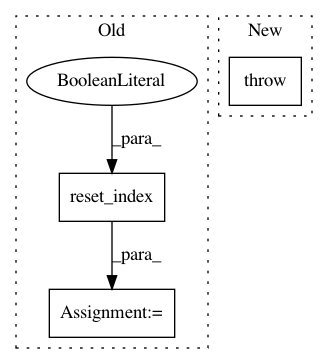

22c8e467fce55e8dd5c2a3b5363ea7fc7ef26bfb,trackpy/tests/test_reproducibility.py,TestReproducibility,test_characterize,#TestReproducibility#,112
Before Change
raise nose.SkipTest("Reproducibility tests are temporarily disabled "
"for API breaks in v0.4")
equal = self.compared[3]
equal_f = self.expected.iloc[equal[0]].reset_index(drop=True), \
self.actual.iloc[equal[1]].reset_index(drop=True)
for field in ["mass", "size", "ecc", "signal", "raw_mass", "ep"]:
assert_allclose(equal_f[0][field].values,
equal_f[1][field].values,
After Change
assert_allclose(actual_coords,
self.expected_characterize[:, :2])
except AssertionError:
raise AssertionError("The characterize tests failed as the coords"
" found by locate were not reproduced.")
assert_allclose(actual_char,
self.expected_characterize[:, 2:])
// SCRIPT TO GENERATE THE FEATURES
In pattern: SUPERPATTERN
Frequency: 3
Non-data size: 3
Instances
Project Name: soft-matter/trackpy
Commit Name: 22c8e467fce55e8dd5c2a3b5363ea7fc7ef26bfb
Time: 2018-01-23
Author: caspervdw@gmail.com
File Name: trackpy/tests/test_reproducibility.py
Class Name: TestReproducibility
Method Name: test_characterize
Project Name: has2k1/plotnine
Commit Name: 23ccc81132999be23a5963299eb168cfe9788809
Time: 2015-04-20
Author: has2k1@gmail.com
File Name: ggplot/stats/stat.py
Class Name: stat
Method Name: _calculate_groups
Project Name: QUANTAXIS/QUANTAXIS
Commit Name: 5097e0bb1677ce99b53163c2773426290c6688ee
Time: 2018-09-27
Author: yutiansut@qq.com
File Name: QUANTAXIS/QAUtil/QAMySQL.py
Class Name:
Method Name: QA_etl_stock_financial